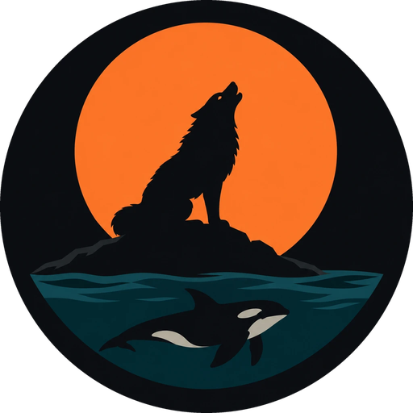
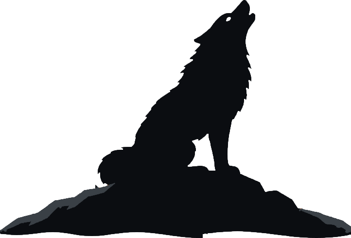

Small on purpose.
One founder. You talk to the person who builds it.
WhoOne founder, hands on.
WhatSoftware and AI, applied to real businesses.
PromiseIf technology isn't the answer, you'll hear it.
Most businesses have a gap somewhere: a job done by hand that shouldn't be, two tools that don't talk, a customer left waiting.
Wolfinn exists to close those gaps. Quietly, properly, and with you involved at every step.

FounderWolfinn

The wolf
Reads the ground.
It sees your whole business: the people, the customers, where things slow down.
Wolf+fin=Wolfinn
The fin
Works in the deep.
Orcas are called the wolves of the sea. Out of sight, they do the heavy work.